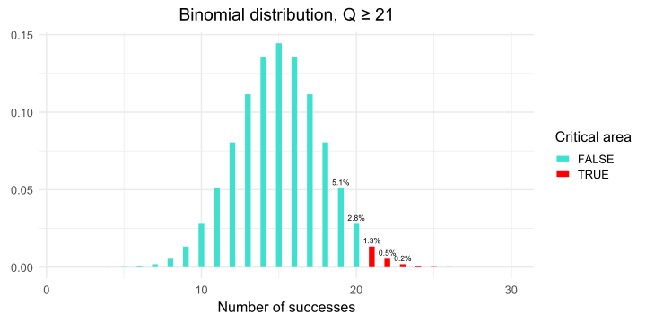
Statistical tests
Probability and Statistics
Ihor Miroshnychenko
Kyiv School of Economics
Statistical test
Startup idea
But users can cancel the order.
Investors are ready to help if the chance of failure is < 50%.
What should I do?
We are conducting an experiment
- Found 30 customers
- 19 paid for the order
Model and observations
We can’t test the product on everyone, but we can collect a sample from the general population and observe the success rate.
- The audience that will use our service — general population, \(\xi \sim \text{Bernoulli}(\mu)\).
- The successful transactions is \(\mu\).
- Sample from the population — \(\xi_1, \xi_2, \ldots, \xi_{30}\).
Problem statement
- Define the hypotheses:
- \(H_0: \mu = 50\%\)
- \(H_1: \mu > 50\%\).
- Determine the criterion statistics:
\(Q = \xi_1 + \xi_2 + \ldots + \xi_{30} \underset{H_0}{\sim} \text{Binomial}(30, 0.5)\)
- Define the criterion:
- if \(Q \geq 21\): reject \(H_0\)
- otherwise: do not reject \(H_0\)
But why 21?
- Determine the statistical significance:
- \(\alpha\) — statistical significance of the criterion, 5%.
- FPR (False Positive Rate) — the probability of rejecting \(H_0\) if it is true.
\(FPR \leq \alpha\)
\[FPR = 1.3\% + 0.5\% + 0.2\% + 0.1\% \approx 2.1\% < 5\%\]
21 vs. 20
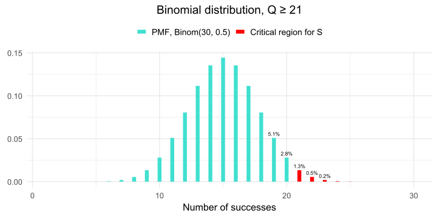
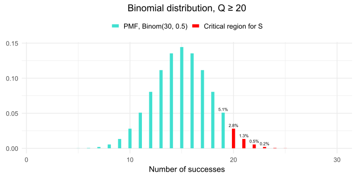
\(FPR_{21} = 1.3\% + 0.5\% + 0.2\% + 0.1\% \approx 2.1\% < 5\%\)
\(FPR_{20} = 2.8\% + 1.3\% + 0.5\% + 0.2\% + 0.1\% \approx 4.9\% < 5\%\)
Solution.
- if \(Q \geq 20\): reject \(H_0\)
- otherwise: do not reject \(H_0\)
So what’s the solution?
- Found 30 customers
- 19 paid for the order
More formal approach
Density function
- The statistic \(Q\) has a binomial distribution:
\[ Q \sim \text{Binomial}(30, 0.5) \]
- The probability function of a discrete distribution \(p_{\xi}(x)\) is the probability that a random variable \(\xi\) takes the value \(x\):
\[ p_{\xi}(x) = P(\xi = x) \]
\(P(\xi = 10)\) = 0.028
\(P(\xi = 16)\) = 0.135
\(P(\xi = 15)\) = 0.144
\(P(\xi = 14)\) = 0.135
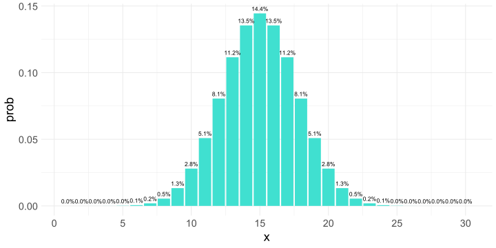
Probability of the critical area
\[ P(Q \geq x) = \sum_{i = x}^{n} p_{\xi}(i) \]
\(P(Q \geq 20) = \sum_{i = 20}^{30} p_{\xi}(i)\) = 0.049
What if \(\color{#e64173}{Q \geq 19}\)?
\(P(Q \geq 19) = \sum_{i = 19}^{30} p_{\xi}(i)\) = 0.1002
Then the probability of error is even higher than 10%, which unlikely good for us at all.
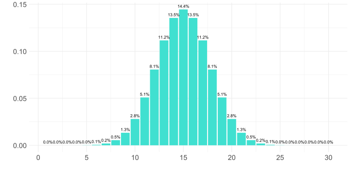
Cumulative distribution function
The cumulative distribution function \(F_{\xi}(x) = P(\xi \leq x)\) is the probability that a random variable \(\xi\) will take a value no greater than \(x\).
\[ F_{\xi}(x) = \sum_{i = 0}^{x} p_{\xi}(i) \]
For \(x = 19\): \(P(\xi \leq 19) = \sum_{i = 0}^{19} p_{\xi}(i)\) = 0.9506
Since \(P(\xi \leq 19) + P(\xi \geq 21) = 1\), we can calculate the level of significance of our test:
\(1 - P(\xi \leq 19) = P(\xi \geq 20)\) = 0.0494
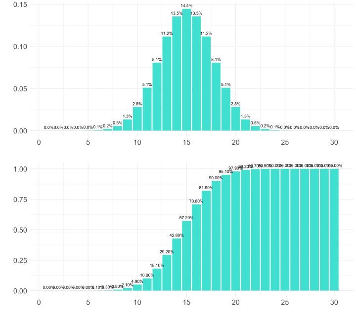
Quantile
To select the critical region for the criterion, we would like to find the point such that the area of the columns to the right of it is \(5\%\). That is, the area of the columns on the left is \(95\%\). This point is called a the 0.95 quantile (or 95th percentile). \[u_p(\xi) = \{x | F_{\xi}(x) = p\}\]
But with \(p = 0.95\) and our binomial distribution, there is no such point. We found out that there is a point to the right of which the area is \(0.494\), and the next one is \(0.1\). To determine the quantile in this case, we modify the definition:
The quantile \(u_p(\xi) = \{x | F_{\xi}(x) \geq p\}\) is a value that \(\xi\) does not exceed with probability at least \(p\).
Quantile: example
For the value \(\xi \sim Bin(30, 0.5)\), let’s calculate the \(0.95\)-quantile. We will solve the problem simply by selection.
\[P(\xi \leq 18) \approx 0.9\]
\[P(\xi \leq 19) \approx 0.951\]
\[P(\xi \leq 20) \approx 0.97\]
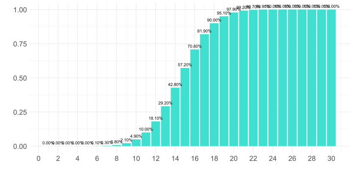
Additional example
- Number of deliveries — 50
- Sufficient probability of success — 0.1, i.e. if the courier’s work costs 100₴, then the delivery cost is 1000₴.
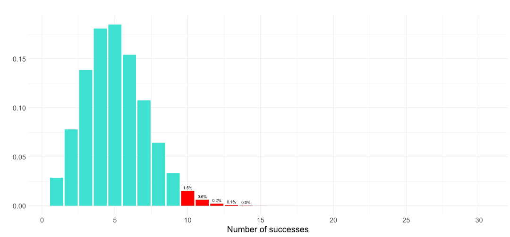
If \(Q \geq 10\), then reject \(H_0\).
Sum of probabilities in the critical region: 0.025
\(p\)-value
\(p\)-value
The \(p\)-value is the probability of obtaining a result that is at least as extreme as our observations, provided that the null hypothesis \(H_0\) is true.
graph TD
A["n = 30 \n H0: μ = 0.5 \n H1: μ > 0.5 \n α = 0.05"] --> B["If Q >= 20: \n Reject H0"]
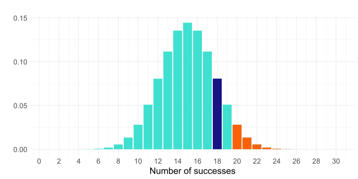
- \(p > \alpha \equiv\) \(q\) outside the critical region \(\equiv\) does not reject \(H_0\).
- \(p \leq \alpha \equiv\) \(q\) in the critical region \(\equiv\) reject \(H_0\).
Statistical criterion for everyone!
Otherwise: do not reject \(H_0\).
Two-sided criterion
Two-sided criterion
Does the color of the car affect compliance with traffic rules?
- \(Q = \xi_1 + \xi_2 + \ldots + \xi_{n}\)
- \(H_0: \mu = 0.5\)
- \(H_1: \mu \neq 0.5\)
- \(\alpha = 0.05\)
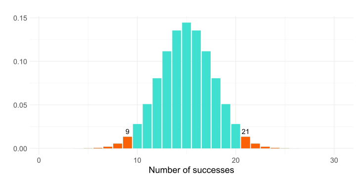
If \(q \geq 21\) or \(q \leq 9\), then we reject \(H_0\).
Asymmetric distribution
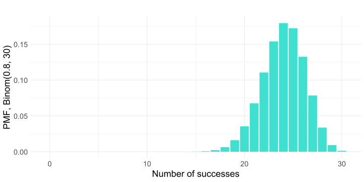In order to construct a two-sided criterion, you need to find regions on the left and right whose area is no more than \(\frac{\alpha}{2}\).
Asymmetric distribution: criterion
So, our criterion for testing the hypothesis is
\[H_0: \mu = 0.8\] \[H_1: \mu \neq 0.8\]
is as follows:
\[S = \{Q(\xi) \leq 18\} \cup \{Q(\xi) \geq 29\}\]
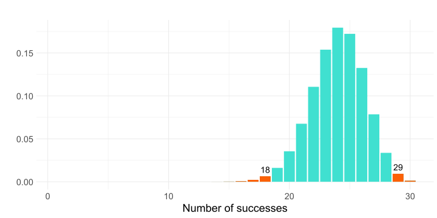Asymmetric distribution: \(p\)-value
This criterion is a combination of two significance level criteria \(\frac{\alpha}{2}\), for each of which \(p\)-values can be calculated.
We denote them as \(p_1, p_2\).
The first criterion is rejected when \(p_1 \leqslant \frac{\alpha}{2}\), the second when \(p_2 \leqslant \frac{\alpha}{2}\).
And ours is unified when one of these conditions is met, i.e.
\[ 2p_1 \leqslant \alpha \vee 2p_2 \leqslant \alpha \Leftrightarrow 2 \cdot \min(p_1, p_2) \leqslant \alpha \]
Asymmetric distribution: \(p\)-value

\(N = 30, \mu = 0.8\).
If \(Q = 28\), then the \(p\)-value is 0.088.
It can be seen that the \(p\)-value is \(> 0.05\), so at a significance level of \(0.05\), even \(28\) successes are not enough to reject the probability of success of \(80\%\).
Power of statistical test
False negative error
Previously, we paid attention only to \(\alpha\) — significance level.
This parameter controls the probability of detecting a type I error (FPR, false positive rate): a deviation of \(H_0\) when it is actually true.
In business terms, how many inefficient projects are we willing to invest resources in?
Yes!!! To do this, it is enough to never discard \(H_0\)
\[ S \equiv 0, \alpha = 0 \]
If there is a Type I error, there is also a Type II error — False Negative Rate (FNR): accepting \(H_0\) when \(H_1\) is actually true.
In business terms: how many effective projects are we willing to miss?
\[ \beta = \text{FNR} = \mathbb{P}(S=0|H_1) \]
Error types
- Type I error (FPR, false positive rate): rejecting \(H_0\) when it is actually true.
- Type II error (FNR, false negative rate): failing to reject \(H_0\) when \(H_1\) is actually true.
How to remember?


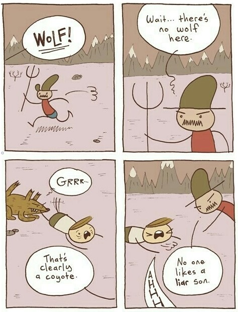
- Source: https://memeguy.com/photo/106
- Source: https://memeguy.com/photo/106
- Source: https://memeguy.com/photo/106283/the-boy-who-cried-wolf
Test for time of year ❄️☀️
\[ H_0: \text{it's summer outside} \]
\[ H_1: \text{it's not summer outside} \]
\[ \begin{equation} Q = \begin{cases} 1, & \text{if it is snowing outside} \\ 0, & \text{otherwise} \end{cases} \end{equation} \]
\[ \begin{equation} S = Q = \begin{cases} 1, & \text{if }Q = 1, \text{ reject } H_0 \\ 0, & \text{if }Q = 0, \text{ do not reject } H_0 \end{cases} \end{equation} \]
\[ \alpha = \text{FPR} = \mathbb{P}(\text{it's snowing}|\text{it's summer}) < 0.001 \]
\[ \beta = \text{FNR} = \mathbb{P}(\text{it is not snowing}|\text{it is not summer}) > 0.9 \]
As you can see, the test is quite useless.
The power of a statistical test (power, True Positive Rate) is the probability of correctly rejecting \(H_0\) when it is truly false, i.e., the ability to detect an effect if it really exists.
\[ \text{Power} = 1 - \beta = \mathbb{P}(S=1|H_1) \]
In our example: \(\text{Power} = 1 - 0.9 = 0.1\).
Power
Let’s recall the delivery task:
\(H_0: \mu = 0.5 \\H_1: \mu > 0.5 \\Q = \text{number of confirmed orders} \\\alpha = 0.05 \\ S = \{Q \geq 20\}\)
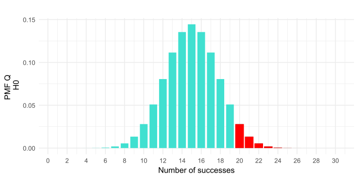
Suppose that \(H_1\) is true: \(\mu = 0.6\).
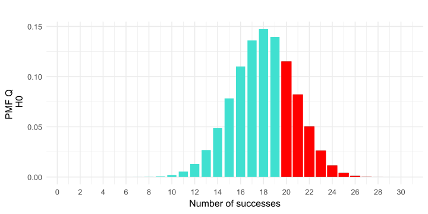
\[\text{Power} = \mathbb{P}(Q \geq 20|\mu = 0.6)\]
\[\text{Power} = \mathbb{P}(Q \geq 20|\mu = 0.6)\]
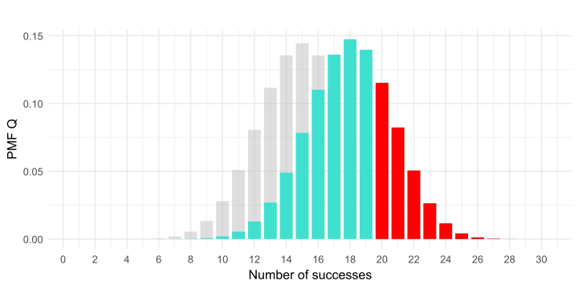False Positive Rate is 4.9%Power is 29.1%You can see that the power is about \(30\%\). This is quite a small value, because if our product is profitable, we will only see it with a probability of \(30\) percent using our test. We can easily miss the effect.
Power vs. Sample Size
It is generally accepted that \(80\%\) of power is considered acceptable for work.
Let’s see how the power changes as the sample size increases, and how many experiments are needed to detect the effect at \(\mu=0.6\) in \(80\%\) of cases.
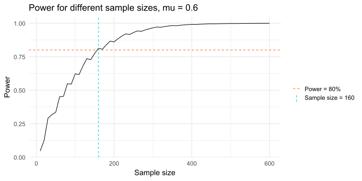Power vs. Sample Size (cont.)
What if we want to detect an even smaller effect? For example, if we want to reject the hypothesis at \(\mu = 0.51\). Often, an improvement in the probability of success by \(1\%\) can be significant for a product, so this question is not without meaning.
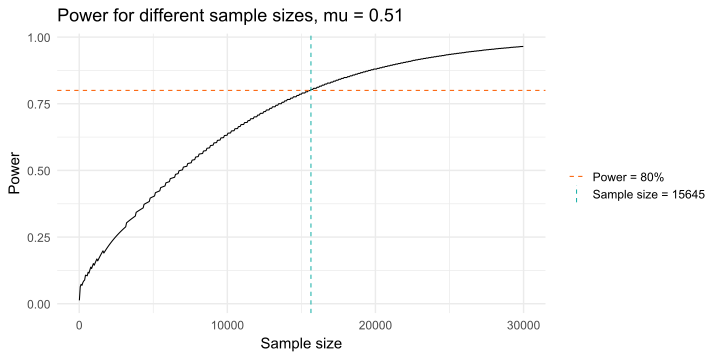Before each experiment, the analyst should think about test duration and number of participants.
To do this, you need to understand:
- What effect is practically significant for the task?
- How many subjects will it take to detect this effect more often than \(80\%\) of the time?
Power vs. effect size
The graphs show that a larger sample size is required to detect a smaller effect.
Let’s see how the power changes for different parameters \(\mu\) for a fixed \(N = 30\).

In our experiment, we detect an effect well only if the probability of success in the population is at least \(72\%\).
Minimum detectable effect (MDE)
Minimum detectable effect
Minimal Detectable Effect (MDE, Minimal Detectable Effect) — this is the smallest effect that we can detect with an experiment (usually at \(80\%\) power).
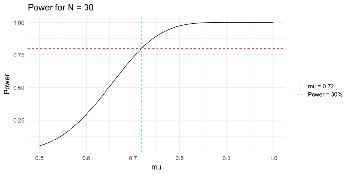In our example, \(\text{MDE} = +0.22\)
More formally
\(\text{MDE}\) for the hypothesis \(\mathsf{H}_0: \mu = \mu_0\) — this is the minimum effect of \(\delta\) at which the significance level criterion \(\alpha\) for testing this hypothesis, given the true parameter \(\mu = \mu_0 + \delta\) and sample size \(N\), will reject \(\mathsf{H}_0\) with power greater than \(1 - \beta\).
Usually, \(\text{MDE}\) is calculated for a reason, and the question of determining the sample size goes hand in hand with it.
Determining the sample size
In our task:
- We found \(30\) customers without first calculating how many of them we would need.
- If the resulting \(\text{MDE}\) is too large and you need to make it smaller because the expected changes are much smaller?
- Then the opposite problem is solved: given the required \(\text{MDE}\), determine the sample size.
- If we say that we want to detect \(+10\) pp, i.e. \(60\%\) of successful deliveries, then we need to find 160 test customers, as you can see from the previous graphs.
- If we search for 30 people for a month, for example, such a test can take almost six months.
Therefore, it is worth considering allocating additional resources to find customers, for example, by engaging marketers.
Confidence intervals
Confidence interval
Confidence interval (CI, confidence interval) — is a range of values calculated based on sample data containing an unknown parameter of the general population with a given confidence level (for example, 95%).
If you repeat the process of sampling and calculating the confidence interval many times (say, 1000 times) under the same conditions, then on average, 95% of these intervals (at a 95% confidence level) will contain the true value of the parameter, and 5% will not.
For example, in the delivery task, the confidence interval for the proportion of successful deliveries can be calculated as follows:
\[ \hat{p} \pm z_{1 - \frac{\alpha}{2}} \sqrt{\frac{\hat{p}(1 - \hat{p})}{n}} \]
where \(\hat{p}\) is the sample proportion of successes.
\(z_{1 - \frac{\alpha}{2}}\) is the quantile of the standard normal distribution.
Startup: confidence interval
- With a sample of 30 customers, we found 19 successful deliveries. So with 95% confidence, we can say that the proportion of successful deliveries is between 0.4390802 and 0.7945719.
- For 28 successful deliveries, the interval is 0.7649271 to 0.9883682.
Confidence interval property
Whatever the true value of \(\mu = \mu_0\), the probability that it is between \(\mathcal{L}(Q)\) (lower confidence bound) and \(\mathcal{R}(Q)\) (upper confidence bound) is at least \(1 - \alpha\).
The value \(1 - \alpha\) is called the confidence level of the confidence interval.
\[ P(\mathcal{L}(Q) < \mu_0 < \mathcal{R}(Q)) = 1 - \alpha \]
It is important that the randomness here is hidden in \(\mathcal{L}\) and \(\mathcal{R}\), not in \(\mu_0\).
The parameter \(\mu_0\) is unknown, but we assume it to be constant and not random.
Summary
Hypothesis testing algorithm for our task:
- Business problem / hypothesis
- Formulation of the null and alternative hypotheses:
- \(\mathsf{H}_0: \mu = 0.5\)
- \(\mathsf{H}_1: \mu > 0.5\).
- Statistics of the criterion \(Q = \sum_{i=1}^n \text{Bernoulli}(\mu)\), \(q = 19\).
- The distribution of \(Q\) at \(\mathsf{H}_0\) and the critical region (\(p\)-value) at \(\alpha = 0.05\).
- \(\text{MDE} (n, \text{power}, \alpha)\).
- Confidence interval for \(\mu\).

Probability and Statistics